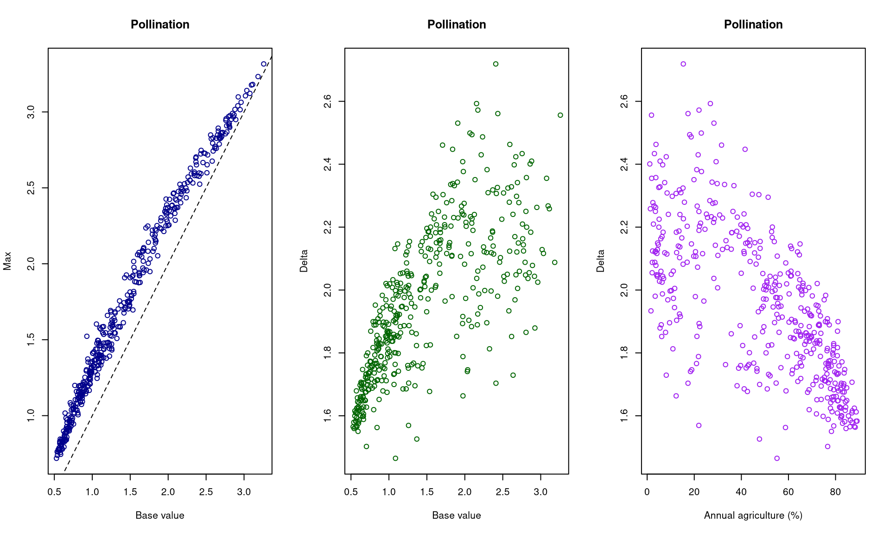
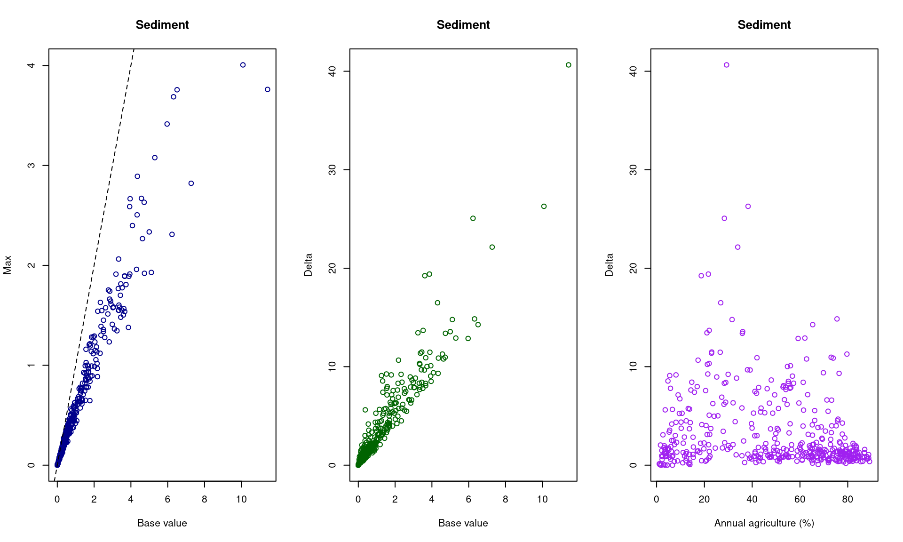
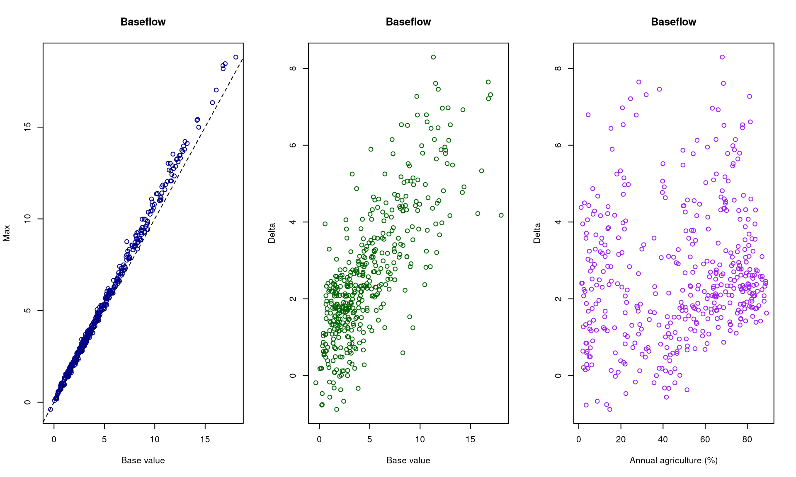
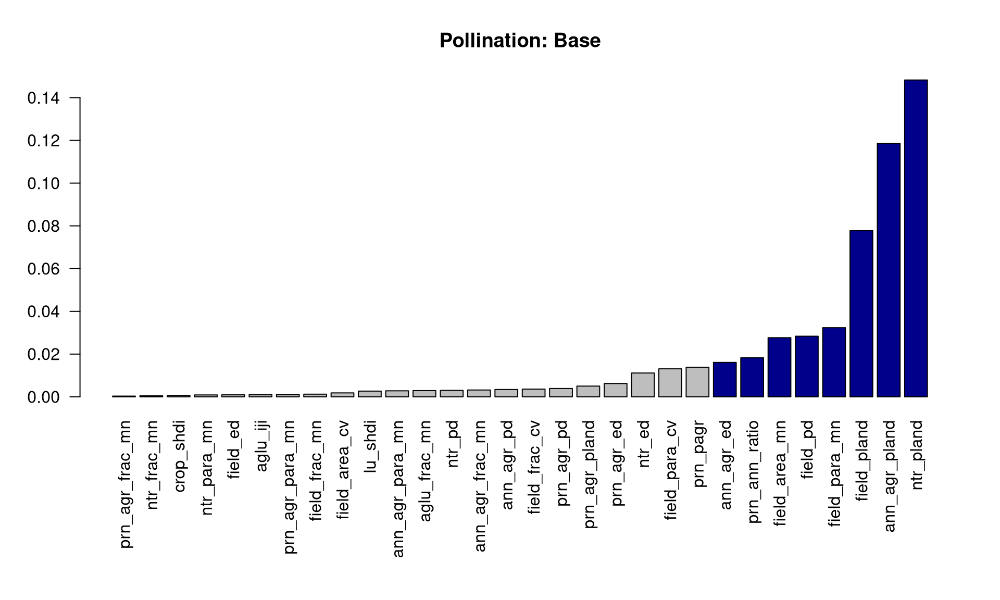
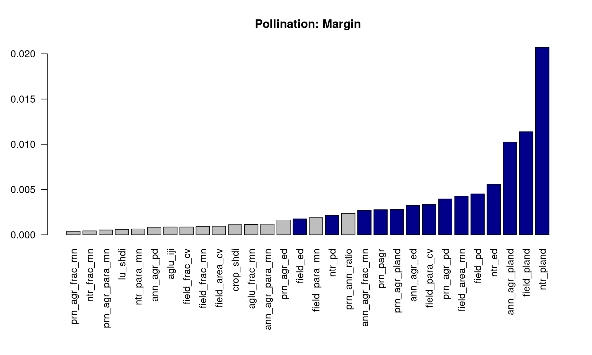
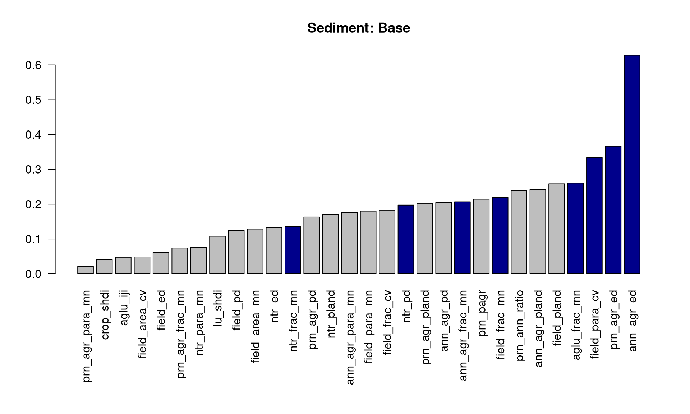
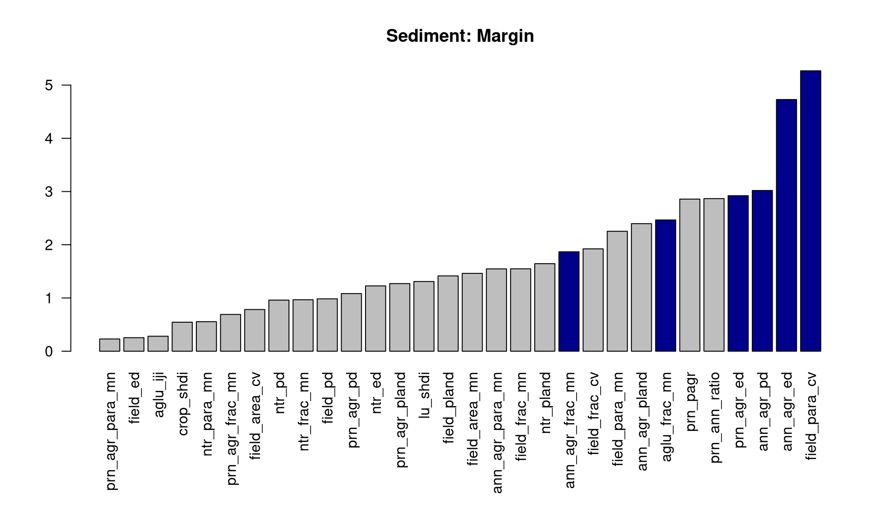
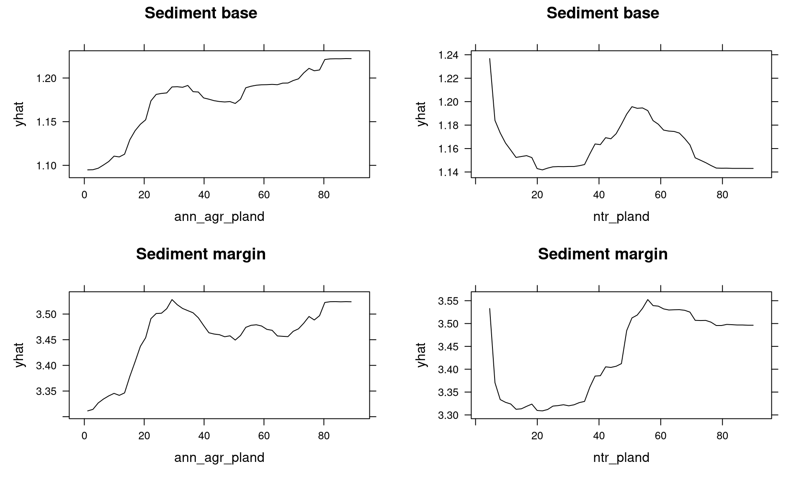

#| label: fig-overview#| fig-cap: "Basic ES responses."#| warning: falsepar(mfrow=c(1, 3))# with(wfs, plot(ann_agr_pland, pollinators_base, col = "black", xlab = "Annual agriculture (%)", ylab = "Ecosystem Service", main = "Pollination"))# with(wfs, points(ann_agr_pland, pollinators_max, col = "green"))# legend("topright", pch = c(1, 1), col = c("black", "green"), legend = c("Base", "Max"))with(wfs, plot(pollinators_base, pollinators_max, col ="darkblue", xlab ="Base value", ylab ="Max", main ="Pollination"))abline(c(0, 1), lty =2)with(wfs, plot(pollinators_base, delta_pollinators.margin, col ="darkgreen", xlab ="Base value", ylab ="Delta", main ="Pollination"))with(wfs, plot(ann_agr_pland, delta_pollinators.margin, col ="purple", xlab ="Annual agriculture (%)", ylab ="Delta", main ="Pollination"))

Code
## with(wfs, plot(ann_agr_pland, n_export_base, col = "black", xlab = "Annual agriculture (%)", ylab = "Ecosystem Service", main = "Nitrogen"))# with(wfs, points(ann_agr_pland, n_export_max, col = "purple"))with(wfs, plot(n_export_base, n_export_max, col ="darkblue", xlab ="Base value", ylab ="Max", main ="Nitrogen"))abline(c(0, 1), lty =2)with(wfs, plot(n_export_base, delta_n_export.margin, col ="darkgreen", xlab ="Base value", ylab ="Delta", main ="Nitrogen"))with(wfs, plot(ann_agr_pland, delta_n_export.margin, col ="purple", xlab ="Annual agriculture (%)", ylab ="Delta", main ="Nitrogen"))
Code
## with(wfs, plot(ann_agr_pland, sed_export_base, col = "black", xlab = "Annual agriculture (%)", ylab = "Ecosystem Service", main = "Sediment"))# with(wfs, points(ann_agr_pland, sed_export_max, col = "purple"))with(wfs, plot(sed_export_base, sed_export_max, col ="darkblue", xlab ="Base value", ylab ="Max", main ="Sediment"))abline(c(0, 1), lty =2)with(wfs, plot(sed_export_base, delta_sed.margin, col ="darkgreen", xlab ="Base value", ylab ="Delta", main ="Sediment"))with(wfs, plot(ann_agr_pland, delta_sed.margin, col ="purple", xlab ="Annual agriculture (%)", ylab ="Delta", main ="Sediment"))

Code
## with(wfs, plot(ann_agr_pland, qb_base, col = "black", xlab = "Annual agriculture (%)", ylab = "Ecosystem Service", main = "Baseflow"))# with(wfs, points(ann_agr_pland, qb_max, col = "purple"))with(wfs, plot(qb_base, qb_max, col ="darkblue", xlab ="Base value", ylab ="Max", main ="Baseflow"))abline(c(0, 1), lty =2)with(wfs, plot(qb_base, delta_qb.margin, col ="darkgreen", xlab ="Base value", ylab ="Delta", main ="Baseflow"))with(wfs, plot(ann_agr_pland, delta_qb.margin, col ="purple", xlab ="Annual agriculture (%)", ylab ="Delta", main ="Baseflow"))

What factors correlate to the base rate of ecosystem services?
What factors correlate to the per-ha effect of adding pollinator strips?
Random Forest
These are basic regression RF models looking at the base ES value and at the delta-margin value.
Code
if(!exists("pollinators_base.rf")) { dat <-data.frame(y = wfs$pollinators_base, dat.predictors) pollinators_base.rf <-ranger(y ~ ., data = dat, importance ="permutation", num.trees =1000) pollinators_base.p <-data.frame(importance_pvalues(pollinators_base.rf, method ="altmann", formula = y ~ ., data = dat, num.permutations =1000))rm(dat) dat <-data.frame(y = wfs$delta_pollinators.margin, dat.predictors) pollinators_margin.rf <-ranger(y ~ ., data = dat, importance ="permutation", num.trees =1000) pollinators_margin.p <-data.frame(importance_pvalues(pollinators_margin.rf, method ="altmann", formula = y ~ ., data = dat, num.permutations =1000))rm(dat) }####if(!exists("n_export_base.rf")) { dat <-data.frame(y = wfs$n_export_base, dat.predictors) n_export_base.rf <-ranger(y ~ ., data = dat, importance ="permutation", num.trees =1000) n_export_base.p <-data.frame(importance_pvalues(n_export_base.rf, method ="altmann", formula = y ~ ., data = dat, num.permutations =1000))rm(dat) dat <-data.frame(y = wfs$delta_n_export.margin, dat.predictors) n_export_margin.rf <-ranger(y ~ ., data = dat, importance ="permutation", num.trees =1000) n_export_margin.p <-data.frame(importance_pvalues(n_export_margin.rf, method ="altmann", formula = y ~ ., data = dat, num.permutations =1000))rm(dat) }####if(!exists("sed_export_base.rf")) { dat <-data.frame(y = wfs$sed_export_base, dat.predictors) sed_export_base.rf <-ranger(y ~ ., data = dat, importance ="permutation", num.trees =1000) sed_export_base.p <-data.frame(importance_pvalues(sed_export_base.rf, method ="altmann", formula = y ~ ., data = dat, num.permutations =1000))rm(dat) dat <-data.frame(y = wfs$delta_sed.margin, dat.predictors) sed_export_margin.rf <-ranger(y ~ ., data = dat, importance ="permutation", num.trees =1000) sed_export_margin.p <-data.frame(importance_pvalues(sed_export_margin.rf, method ="altmann", formula = y ~ ., data = dat, num.permutations =1000))rm(dat) }####if(!exists("qb_base.rf")) { dat <-data.frame(y = wfs$qb_base, dat.predictors) qb_base.rf <-ranger(y ~ ., data = dat, importance ="permutation", num.trees =1000) qb_base.p <-data.frame(importance_pvalues(qb_base.rf, method ="altmann", formula = y ~ ., data = dat, num.permutations =1000))rm(dat) dat <-data.frame(y = wfs$delta_qb.margin, dat.predictors) qb_margin.rf <-ranger(y ~ ., data = dat, importance ="permutation", num.trees =1000) qb_margin.p <-data.frame(importance_pvalues(qb_margin.rf, method ="altmann", formula = y ~ ., data = dat, num.permutations =1000))rm(dat) }
Model performance
These are regression RF, so model performance can be assessed by looking at r2 and at MSE. Note that these are on the training data, not on test data, so not a true validation assessment that would be needed for a predictive model. Since we’re doing explanatory modeling currently, that’s fine.
Pollinators:
Base
r2 = 0.984 OOB MSE = 0.008
Margin
r2 = 0.802 OOB MSE = 0.011
Nitrogen export:
Base
r2 = 0.883 OOB MSE = 0.028
Margin
r2 = 0.785 OOB MSE = 0.278
Sediment export:
Base
r2 = 0.473 OOB MSE = 1.034
Margin
r2 = 0.467 OOB MSE = 9.597
Baseflow:
Base
r2 = 0.471 OOB MSE = 6.847
Margin
r2 = 0.387 OOB MSE = 1.79
Can predict pollination extremely well, N quite well, and sediment and baseflow moderately well.
Variable importance
I used permutation importance, which is an unbiased measure (there’s a huge literature on RF importance metrics), and p-values can be calculated. Blue bars denote p < 0.05.
Code
#| label: fig-importance#| fig-cap: "RF importance values."#| warning: falsepar(mfrow =c(1, 1))par(mai =c(2, .8, .8, .4)) dat <- pollinators_base.p[order(pollinators_base.p$importance), ]barplot(dat$importance, col =ifelse(dat$pvalue > .05, "gray", "darkblue"), las =2, main ="Pollination: Base", names =rownames(dat))

Code
dat <- pollinators_margin.p[order(pollinators_margin.p$importance), ]barplot(dat$importance, col =ifelse(dat$pvalue > .05, "gray", "darkblue"), las =2, main ="Pollination: Margin", names =rownames(dat))

Code
rm(dat) dat <- n_export_base.p[order(n_export_base.p$importance), ]barplot(dat$importance, col =ifelse(dat$pvalue > .05, "gray", "darkblue"), las =2, main ="Nitrogen: Base", names =rownames(dat))
Code
dat <- n_export_margin.p[order(n_export_margin.p$importance), ]barplot(dat$importance, col =ifelse(dat$pvalue > .05, "gray", "darkblue"), las =2, main ="Nitrogen: Margin", names =rownames(dat))
Code
rm(dat) dat <- sed_export_base.p[order(sed_export_base.p$importance), ]barplot(dat$importance, col =ifelse(dat$pvalue > .05, "gray", "darkblue"), las =2, main ="Sediment: Base", names =rownames(dat))

Code
dat <- sed_export_margin.p[order(sed_export_margin.p$importance), ]barplot(dat$importance, col =ifelse(dat$pvalue > .05, "gray", "darkblue"), las =2, main ="Sediment: Margin", names =rownames(dat))

Code
rm(dat) dat <- qb_base.p[order(qb_base.p$importance), ]barplot(dat$importance, col =ifelse(dat$pvalue > .05, "gray", "darkblue"), las =2, main ="Baseflow: Base", names =rownames(dat))
Code
dat <- qb_margin.p[order(qb_margin.p$importance), ]barplot(dat$importance, col =ifelse(dat$pvalue > .05, "gray", "darkblue"), las =2, main ="Baseflow: Margin", names =rownames(dat))
Code
rm(dat)
I want to look more closely at the response over various metrics.
Partial dependence plots show change in the Y variable across the range of a specific predictor (or more than one), when all other variables are held constant.
Code
p1 <-plotPartial(pollinators_base.ann_agr_pland.pdp, main ="Pollinators base") p2 <-plotPartial(pollinators_margin.ann_agr_pland.pdp, main ="Pollinators margin") p3 <-plotPartial(pollinators_base.ntr_pland.pdp, main ="Pollinators base") p4 <-plotPartial(pollinators_margin.ntr_pland.pdp, main ="Pollinators margin")grid.arrange(p1, p3, p2, p4, ncol =2)
Code
p1 <-plotPartial(n_export_base.ann_agr_pland.pdp, main ="Nitrogen base") p2 <-plotPartial(n_export_margin.ann_agr_pland.pdp, main ="Nitrogen margin") p3 <-plotPartial(n_export_base.ntr_pland.pdp, main ="Nitrogen base") p4 <-plotPartial(n_export_margin.ntr_pland.pdp, main ="Nitrogen margin")grid.arrange(p1, p3, p2, p4, ncol =2)
Code
p1 <-plotPartial(sed_export_base.ann_agr_pland.pdp, main ="Sediment base") p2 <-plotPartial(sed_export_margin.ann_agr_pland.pdp, main ="Sediment margin") p3 <-plotPartial(sed_export_base.ntr_pland.pdp, main ="Sediment base") p4 <-plotPartial(sed_export_margin.ntr_pland.pdp, main ="Sediment margin")grid.arrange(p1, p3, p2, p4, ncol =2)

Code
p1 <-plotPartial(qb_base.ann_agr_pland.pdp, main ="Baseflow base") p2 <-plotPartial(qb_margin.ann_agr_pland.pdp, main ="Baseflow margin") p3 <-plotPartial(qb_base.ntr_pland.pdp, main ="Baseflow base") p4 <-plotPartial(qb_margin.ntr_pland.pdp, main ="Baseflow margin")grid.arrange(p1, p3, p2, p4, ncol =2)